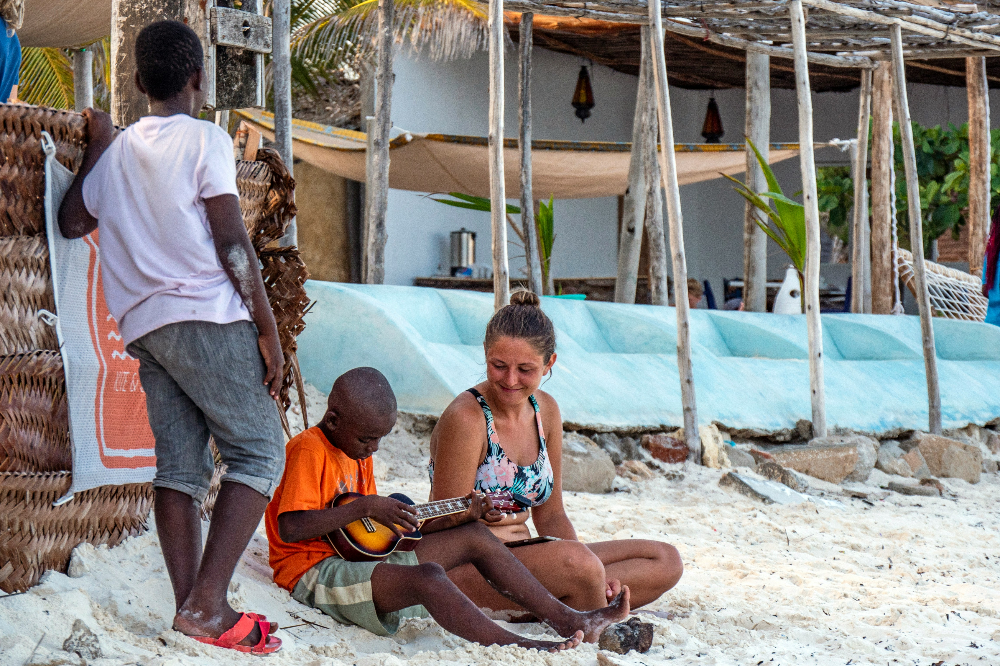
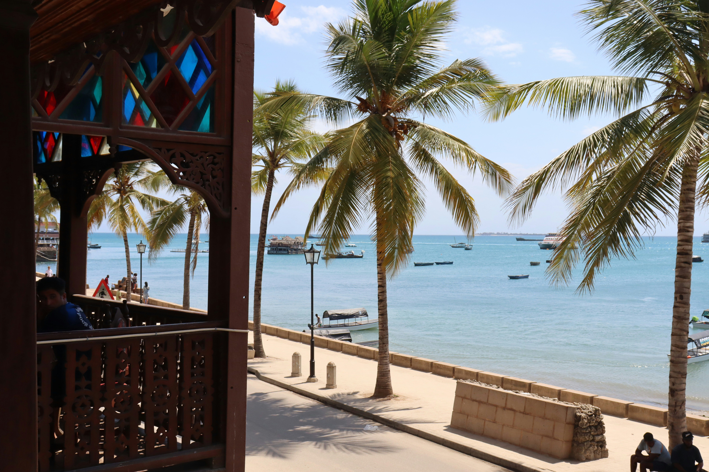
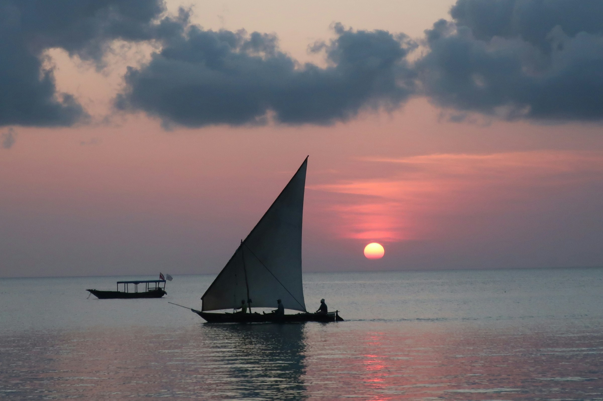
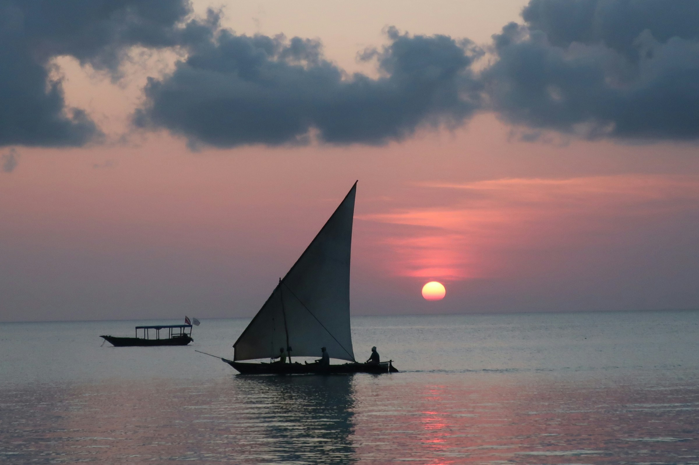
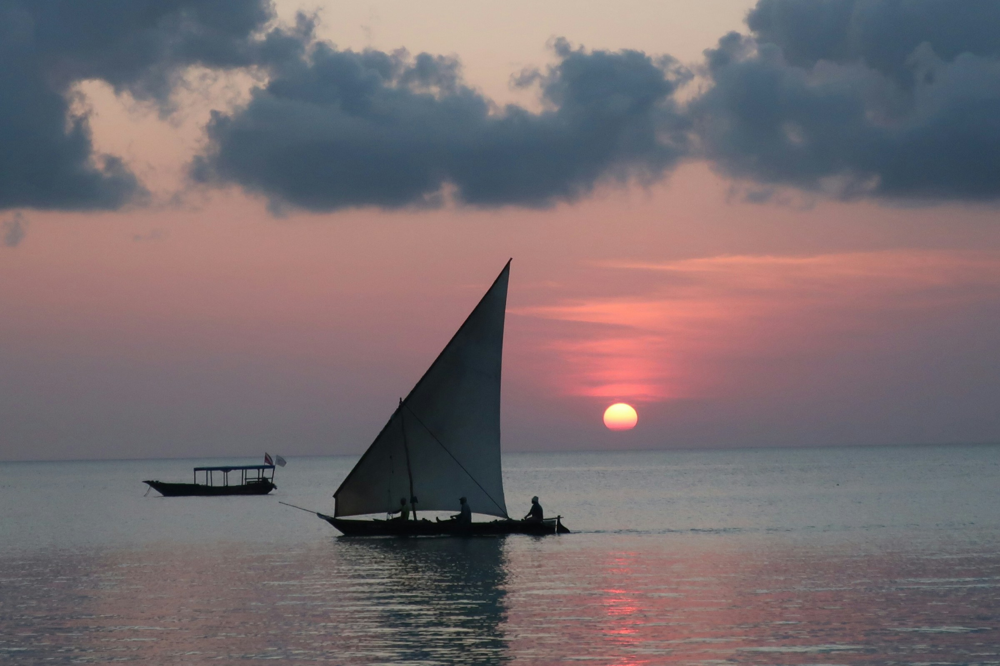

About Zanzibar
Zanzibar is a stunning archipelago located off the coast of Tanzania. Known for its crystal-clear waters, white sandy beaches, and vibrant culture, it's a dream destination for travelers seeking both relaxation and adventure. The island’s rich history blends African, Arab, Indian, and European influences.


 

